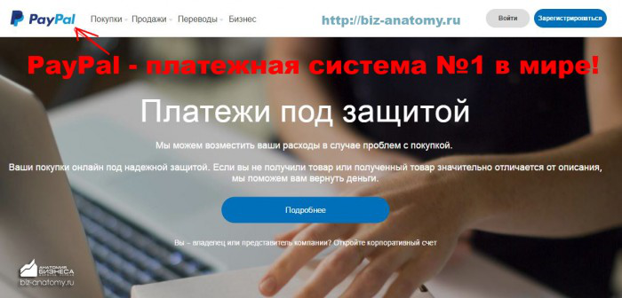
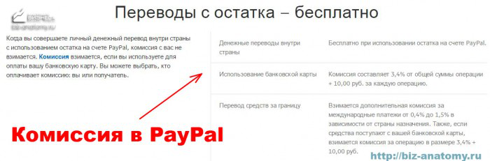
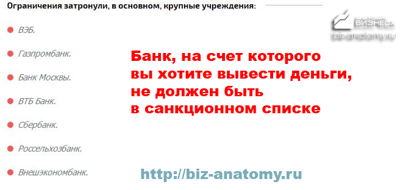
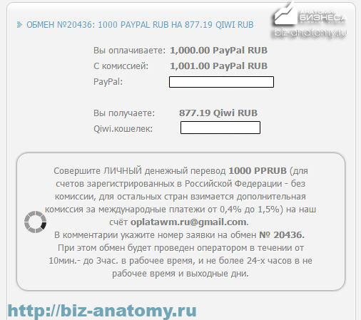
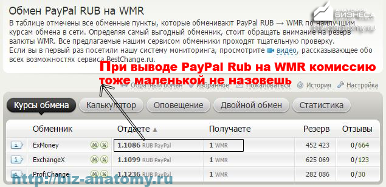
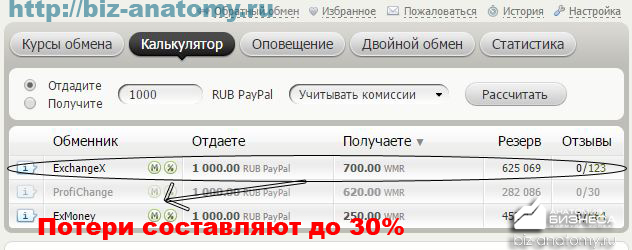
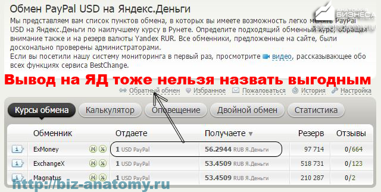
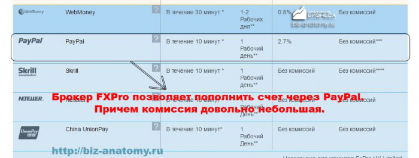
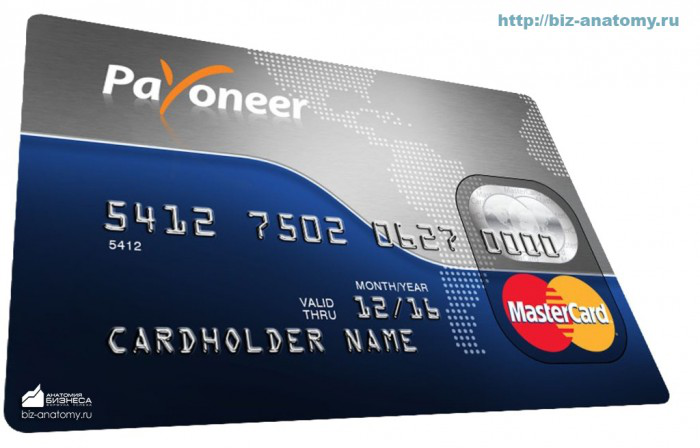
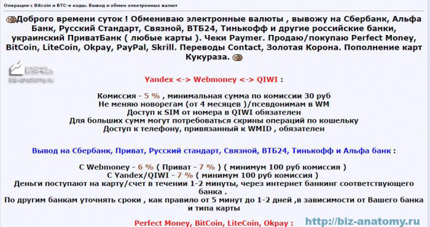

Содержание:
1. Немного истории! Что такое PayPal (в народе – «палка»)? Это интересно!
2. Как работает Пэйпал в разных странах? Важно знать!!!
3. 8 рабочих способов вывода денег!
3.1 Способ 1: вывод на банковский счет! Самый популярный!!!
3.2 Способ 2: вывод на Киви кошелек!
3.3 Способ 3: вывод с помощью Вебмани!
3.4 Способ 4: наносим визит в офис Пэйпал!
3.5 Способ 5: вывод через Яндекс деньги!
3.6 Способ 6: для любителей нестандартных решений!
3.7 Способ 7: вывод на карту Payoneer!
3.8 Способ 8: ищем посредника!
4. Небольшое заключение. Это важно!
PayPal (в народе «палка») – одна из крупнейших платежных систем, позволяющая провести через интернет практически любой платеж. Работает почти во всем мире, так что пользоваться ее услугами можно и в Африке, и в Евросоюзе, и в США, и на территории постсоветского пространства. Многие используются палку для оплаты разных мелочей при покупках в интернете, но периодически возникает вопрос как вывести деньги с PayPal. Вариантов решения этого вопроса немало, тут и на банковскую карту можно организовать вывод и на кошельки других платежных систем.
Небольшая историческая справка
Платежных систем существует множество, но PayPal выделяется на их фон масштабом. Вы только вдумайтесь – система работает почти в 200 странах мира (пусть функционал и не настолько обширен как в США). Учитывая многомиллионную аудиторию клиентов, это и выводит Палку на первое место.
Создана она была в далеком 1998 году в США, момент для создания такой системы был выбран очень удачно. Уже через пару лет около 1 млн лотов на всемирно известном аукционе еВау предлагали возможность оплаты через PayPal.

В истории компании не было серьезных спадов, практически все время наблюдался стабильный рост и наращивание клиентской базы. Людей привлекает то, что платежи совершаются мгновенно, при этом вывод средств с PayPal идет с минимальной комиссией и возможен в большинстве стран мира (региональные платежные системы этим похвастать не могут).
В течение длительного периода времени (2002-2015 гг) система работала в составе eBay, но в 2015 году произошло их разделение. Так что на данный момент палка – самостоятельная платежная система. Ответы на основные вопросы, связанные с работой платежной системы можно получить прочтя статью «FAQ по PayPal: что, как, зачем и еще тысяча вопросов»
Особенности работы PayPal в разных странах!
|
Контекстная реклама под ключ хочузаявки.рфхочузаявки.рфНастраиваем выгодную рекламу в Яндекс, Google, Youtube, соц.сетях и т. д.Скрыть рекламу:Не интересуюсь этой темой / Уже купилНавязчивое и надоелоСомнительного содержания или спамМешает просмотру контента
|
Что касается внешних платежей, то они могут осуществляться в любой валюте, внутренние же могут осуществляться в нацвалюте. Например, в РФ переводы внутри страны проводятся в рублях, а комиссия рассчитывается по принципу 3,9% от суммы платежа + 10 рублей. Но это максимум, если вы продавец и активно используете Пэйпал, то она может быть снижена до 2,9% + 10 рублей, при больших оборотах даже 1% экономии заметен.
Во многих странах местная валюта не используется, в таких случаях и внутренние переводы идут в долларах. При этом с платежа взимается 3,4% + $0,3, по такой схема система работает со странами СНГ. Подробнее о конвертации валют в системе можно прочесть в статье «Конвертация средств в PayPal: делаем все с умом, экономим деньги».
Комиссию в системе платит получатель платежа, при этом ее размер сильно зависит от того, откуда именно пришли деньги. Например, для получения платежа на российский счет Пэйпал из стран Скандинавии процент составляет 4,3% + $0,3, а вот если деньги идут из США, Канады и западной Европы процент чуть увеличивается и составляет 4,4% + $0,3. Платежи из стран восточной Европы облагаются комиссией 4,9% + $0,3, а максимальную сумму придется отдать для стран, не вошедших в указанный список – 5,4% + $0,3.

Если вы задумались о том, как вывести с PayPal на карту деньги с минимальной комиссией, то сделать это можно при большом обороте (например, вы организовали свой бизнес и активно используете Пэйпал). Максимум, на что можно рассчитывать – снижение до 2,4% + $0,3, но для этого нужно достичь оборота в $100000.
Что же касается конвертации валюты при денежных переводах, то эта операция может выполняться автоматически, если вы хотите все деньги держать в одной валюте, но сбережения можно хранить и в разных валютах, в таком случае этап конвертации будет происходить непосредственно когда вы пытаетесь вывести деньги:
Куда можно вывести деньги с PayPal? Изучаем все возможные способы!
|
Сколько стоит реклама Яндекс.Директ – Настройка аналитики в подарок you-x.ruyou-x.ruПрофессиональная настройка Яндекс.Директ и Google AdWords за 199 рублей в день! Контекстная рекламаSEOSMMРазработка сайтовСкрыть рекламу:Не интересуюсь этой темой / Уже купилНавязчивое и надоелоСомнительного содержания или спамМешает просмотру контента
|
Любая современная платежная система позволяет вывести деньги:
Этот минимальный «джентельменский набор», которым обладает любая платежная система. Ну а отличия кроются уже в таких мелочах как возможность вывести деньги в местной валюте, величине комиссии, сроках вывода и т. д. Эти на первый взгляд мелкие детали могут попортить немало нервных клеток, особенно если деньги нужны прямо сейчас, а на пустом месте возникает задержка.
Вообще вывод средств с PayPal на постсоветском пространстве не такая уж и простая задача. Это с Вебмани все незамысловато – прикрепил банковскую карту и выводи деньги хоть в рублях, хоть в гривнах, хоть в евро или долларах, можно и банковским переводом деньги обналичивать. PayPal в этих вопросах не всегда удобен.
Способ №1: как вывести деньги на банковский счет
Сразу оговорюсь, что нужно смотреть какой именно банк вы планируете использовать. Виной всему недавние санкции, введенные против ряда российских финучреждений. Так что если вы, например, являетесь клиентом «Банка России» или «Инвесткапиталбанка», то даже не пытайтесь организовать вывод денег на их реквизиты, из-за санкций палка просто откажется выполнять эту транзакцию.
Но под санкции попали не все банки России, так что можно смело работать со Сбербанком или ВТБ24 они позволят решить вопрос как вывести с PayPal на карту. Ну а вообще я бы советовал просто ознакомиться с санкционным списком или уточнить в техподдержке PayPal работают ли они с вашим банком.

|
Настройка рекламы в РСЯ! r-broker.rur-broker.ruРазмещение рекламы в РСЯ + настройка 1 РК бесплатно!КейсыАвтоматический аудитКонтактыО компанииСкрыть рекламу:Не интересуюсь этой темой / Уже купилНавязчивое и надоелоСомнительного содержания или спамМешает просмотру контента
|
Вывод на банковский счет работает по одной и той же схеме. Понятно, что перед этим карту нужно привязать к своему аккаунту (при этом с нее списывается небольшая сумма, которую через пару дней возвращают обратно). Порядок действий предполагается такой:
Ждать придется несколько дней – своего рода плата за надежность, подробнее об основах безопасности можно прочесть в этой статье «Как обезопасить себя используя PayPal или eBay: основы безопасности». Это не очень выгодно если сравнить, например, с Webmoney, которая может вывести деньги на карту банка практически мгновенно с комиссией в пару процентов. Зато с PayPal вы можете работать где угодно и с картами любых банков мира.
Способ №2: вывод средств с PayPal на Киви кошелек
Платежная система Киви очень удобна (по крайней мере для резидентов РФ), позволяет обналичивать деньги практически любым способом, включая и переводы на кошельки других платежных систем. Резиденты РФ могут привязать Киви кошелек к Вебмани, так что вариантов ввода/вывода денег масса.
Кошелек Киви привлекателен еще и тем, что для того, чтобы завести его понадобится всего лишь номер мобильного телефона. Конечно, безопасность ниже, чем у того же Вебмани, но сейчас не об этом речь.
Напрямую вывести деньги на кошелек Киви невозможно (если встретите какие-нибудь чудо инструкции как сделать это – знайте, это ложь). Перевод такого типа можно сделать только с использованием посредников в лице разных обменников, либо найдя человека, за которого вы, например, оплатите товар в интернете с Пэйпал, а он вам закинет деньги на Киви. Вообще посредник – универсальный вариант, с его помощью можно решить вопрос как снять деньги с PayPal практически с нулевой комиссией.
Курс обмена будет, мягко говоря, не самым выгодным, но тут уж ничего не поделаешь:
Обменники хороши тем, что не нужно ждать пока деньги придут вам на карту, что обычно занимает несколько дней. Схема выглядит примерно так – вы переводите их на счет Пэйпал обменника, а они после поступления денег выводят сумму вам на Киви или кошелек другой платежной системы.

В остальном работаем с обменником как обычно – указываем сумму перевода, номер кошелька Киви и свои данные в Пэйпал. После этого создается заявка, подтверждаем платеж и ждем деньги. Еще раз подчеркну – снимут за такой перевод немало, с 1000 рублей на PayPal получить на Киви удастся меньше 880 рублей. Зато после этого вопрос как вывести деньги с PayPal теряет актуальность, ведь с Qiwi вывести деньги можно как угодно и практически без задержек.
Это не единственный способ перевести деньги на Киви. Для этого можно воспользоваться и Payoneer, но время перевода это нисколько не сократит (с Пэйпал деньги на счет Payoneer будут идти все те же несколько дней). Получится немного выгадать по деньгам по сравнению с обменниками, но выгода, учитывая столь долгое ожидание, сомнительна.
Способ №3! Как вывести деньги с PayPal через Webmoney?
В России, да и в прочих русскоязычных странах именно эта платежная система является одной из самых популярных. Так что не упомянуть ее было бы просто преступлением. Как и в случае с Киви кошельком Вебмани будет выступать в роли посредника, основная наша задача – получить деньги с Пэйпал на кошелек WMR, а уже потом обналичить их любым способом.
Вывести деньги на кошелек Вебмани можно 2 способами:
При работе по первому способу действует ряд ограничений:
После этого уже можно пробовать создавать заявку, из минусов такого способы вывода можно считать немаленькую комиссию. С другой стороны, экономится время и не нужно ждать несколько дней пока деньги придут на ваш счет. Так что если потеря примерно 14% не страшит вас, то Webmoney можно использовать для решения задачи как снять деньги с PayPal. Суммарно (учитывая комиссию при выводе с кошелька WMR/WMZ) потери составят около 16-17%, зато ждать придется максимум 20-30 минут.

Для организации перевода действуем в таком порядке
Что касается комиссии, то оформляя перевод на 1000 рублей, на кошелек Вебмани вы получите порядка 700 руб. Это можно считать своего рода платой за срочность – не хотите ждать несколько дней пока деньги придут на карту или банковский счет – платите больше денег.

Можно переводить и через обменники (и рубли и доллары), отдать придется 9,9%, платеж приходит в течение 20-30 минут. При этом многие обменники устанавливают минимальную комиссию на уровне 10WMZ/10WME или 700-800 рублей, так что переводить мелкие суммы не получится, для крупных переводов предлагаются особые условия с немного меньшим вознаграждением обменника. После того как перевод пройдет можно с Вебмани вывести деньги любым удобным способом.
Еще один вариант – использовать карту Вебмани. Ее можно привязать непосредственно в Пэйпал так же, как и обычные банковские карты.
Способ №4! Как снять деньги с PayPal через офис компании?
Это практически идеальный способ получить деньги быстро и с приемлемой комиссией. Ну а недостаток здесь только один – подойдет он только для избранных, ведь на всю Россию работает всего пара таких офисов (да и в других русскоязычных странах ситуация не лучше). Так что повезло с этим только жителям столицы и Петербурга.
Сам перевод ничем особенным не выделяется. Просто приходите в офис и получаете деньги после небольшого ожидания. Комиссия при этом составляет порядка 5%.
Из преимуществ такого способа – скорость и небольшая комиссия. Вам не нужно ни ждать несколько дней пока деньги придут на карту банка, ни платить 15-20% за быстрый перевод на кошелек другой платежной системы.
Способ №5! Как вывести наличность с помощью Яндекс денег?
Вебмани и банковская карта – не единственный вариант куда можно вывести деньги с PayPal. Другие платежные системы также могут использоваться для этих целей, ЯД – один из таких вариантов.
По популярности эта платежная система несколько уступает Вебмани, но все равно распространена она очень широко, так что многие выводят деньги с Пэйпал именно таким способом. Перевод денег можно выполнить несколькими способами:
С обменниками работаем в том же порядке, что и раньше – выбираем тип и валюту перевода, указываем сумму и подтверждаем платеж. На маленькую комиссию рассчитывать не приходится, отдать придется больше 15% от суммы перевода (это без учета вознаграждения самих платежных систем). Ну и при выводе средств с ЯД тоже есть своя небольшая комиссия в пределах пары процентов. Если верить калькулятору на обменниках, то суммарно переплатить придется до трети от суммы перевода.
Сама схема работы не меняется – при решении вопроса как вывести деньги с PayPal мы опять используем посредника, просто теперь это будет кошелек платежной системы ЯД.

Что касается карточек платежной системы, то тут все просто – и реальная, и виртуальная карты ЯндексДенег по функционалу практически полный аналог банковских карт. У них есть и 16-значный номер, и CVV код, так что их можно использовать для оплаты товаров и услуг, а также для привязки к кошелькам разных платежным систем, в том числе и PayPal.
Такую карту можно выпустить либо в пластике (придется подождать пару недель пока она будет выпущена и доставлена почтой на указанный адрес), либо ограничиться виртуальным ее воплощением. Конечно, расплатиться в магазине виртуальной картой не получится, но для перевода денег с палки она подойдет.
Способ №6: не совсем обычный способ вывода денег
Все перечисленные способы сводятся к одному и тому же – поиску посредника, через которого деньги и будут выводиться. Но кошельки разных платежных систем – не единственный вариант решения вопроса куда можно вывести деньги с PayPal.
Еще один довольно экзотический способ – использовать форекс брокера, который работает с Пэйпал. То есть сперва мы заводим деньги на счет брокера (то есть просто пополняем свой депозит), а дальше уже пробуем вывести их. Причем торговать вовсе не обязательно, хотя в этом вопросе нужно ознакомиться с условиями работы брокера. В крайнем случае можно использовать свой основной счет, на котором уже есть приличный оборот, чтобы просто не вызвать подозрений.
Проблема тут в том, что далеко не все брокеры работают с PayPal, но при желании можно подобрать рабочий вариант. Как пример можно привести брокера FXPro, который позволяет пополнять счет с Пэйпал. При этом операция облагается комиссией 2,7% + комиссия самой платежной системы.
Теоретически процесс зачисления денег может растянуться на день, но на практике деньги обычно приходят в течение нескольких минут. Привлекает то, что при выводе средств никакая комиссия с трейдера не взимается.

Единственный недостаток у такого способа обналички средств – подойдет он далеко не всем, а если просто завести счет для того, чтобы вывести деньги, то у администрации могут возникнуть вопросы, почему нет сделок. В остальном способ неплох – ввод денег занимает несколько минут, вывод тоже происходит в течение дня, но обычно быстрее. При этом комиссия небольшая.
Способ №7! Как вывести с PayPal на карту Payoneer?
Если возиться с картами русских банков нет желания, то можно просто заказать карту Payoneer и спокойно снимать деньги в долларах с суммарной комиссией порядка 5-6%.
При заказе карты (делаем это на официальном сайте) самое важное правильно, с точностью до буквы вписать вашу имя, фамилию. Чтобы не запутаться посмотрите, как она записала в загранпаспорте или на других банковских картах. Это действительно важно, если ошибетесь – рискуете получить карту, которую нигде принимать не будут.

После того, как карта придет к вам почтой ее нужно будет активировать (в бумаге об этом все будет написано). Далее ее можно привязать к Пэйпал и вывести доллары прямо на нее с приемлемой комиссией. Подробнее об основах работы в Payoneer и подобном способе вывода можно прочесть в статье «Payoneer и PayPal: еще один способ вывести деньги на свой счет».
При этом нужно понимать, что отдельный счет на вас в американском банке не открывается. Просто у Payoneer в банке есть один счет, с которым работает множество клиентов, то есть для каждого из них открывается виртуальный счет. Деньги сначала заходят на реальный физический счет, а уже потом распределяются между отдельными клиентами.
Способ №8: рискованный, зато с минимальной комиссией
Еще один способ обналичить деньги с Пэйпал – просто найти человека, которому нужно что-то купить с оплатой через PayPal. Он вам живые деньги на руки, вы оплачиваете его покупку. Так можно «вывести» деньги не потеряв ничего. Проблема только найти такого человека.
Как вариант – можно воспользоваться услугами посредника, подобные объявления регулярно появляются на разных форумах. Такие люди могут реально помочь в ситуации, когда деньги нужны срочно и ни один из описанных способов как вывести деньги с PayPal не подходит.

Комиссия у таких дельцов сравнительно невысока – порядка 5-10% дополнительно к самой комиссии платежной системы за перевод. Ну и самое главное – не нужно будет ждать несколько дней.
|
Хранилище удаленных файлов! 24/7 – Облачное хранилище от 3.29 р/м! selectel.ruselectel.ruНадежное, безопасное, удобное хранилище ваших данных от 3.29 р./мес.! Легкая настройка!Виртуальное приватное облакоАренда выделенного сервераСкрыть рекламу:Не интересуюсь этой темой / Уже купилНавязчивое и надоелоСомнительного содержания или спамМешает просмотру контента
|
По большому счету в вопросе как вывести деньги с PayPal есть всего 2 способа – выводить напрямую на банковский счет, что очень неудобно по срокам, либо использовать посредника. А уже на роль посредника можно подобрать много разных вариантов, это может быть и платежная система, и даже счет какого-нибудь брокера.
Пока что остается только надеяться, что в будущем вывод с Пэйпал станет более удобным и быстрым. Но сейчас (если вы только не резидент США) в этом вопросе другие платежные системы более удобные.